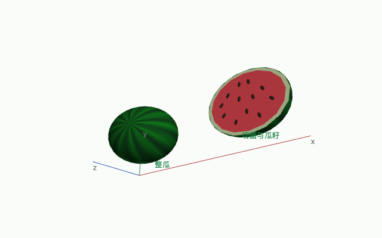

求解
先求二次方程的根，再看含参数方程成立的条件。修改 之后，依赖它的结果会标为过期，重新运行才会更新。
先求二次方程的根，再看含参数方程成立的条件。修改 之后，依赖它的结果会标为过期，重新运行才会更新。
solve(x^2 - 5x + 6 = 0, x)
solve(k*x = 1, x)
let a = 5
a^2 + 1
二维图由内核采样，可以拖动平移、滚动缩放；三维场景直接拖动旋转。图形操作只改变视角，不重新计算。
plot([sin(x), cos(x)], x: -pi..pi)
let whole_melon = translate(rotate(parametric_plot([1.25*cos(u)*sin(v), sin(u)*sin(v), cos(v)], u: 0..2*pi, v: 0..pi, mesh_points: 32, color: fn(p,u,v) => [0.06, 0.34 + 0.14*cos(12*u + 0.35*sin(3*v)), 0.1]), pi/9, axis: [0,1,0]), [-2,0,0]);
let half_skin = translate(parametric_plot([1.25*cos(u)*sin(v), sin(u)*sin(v), cos(v)], u: 0..2*pi, v: pi/2..pi, mesh_points: 32, color: fn(p,u,v) => [0.06, 0.34 + 0.14*cos(12*u + 0.35*sin(3*v)), 0.1]), [2,0,0]);
let rind = translate(scale(disk([0,0,0], 1, color: "#d8e7b2"), [1.25,1,1]), [2,0,0.003]);
let flesh = translate(scale(disk([0,0,0], 0.91, color: "#ed4a55"), [1.25,1,1]), [2,0,0.009]);
let seeds = map(fn(p) => translate(rotate(ellipsoid([0,0,0], [0.045,0.085,0.022], color: "#38251b"), p[1], axis: [0,0,1]), [2+p[1], p[2], 0.022]), seed_locations);
scene([whole_melon, half_skin, rind, flesh, seeds, label("整瓜", [-2,0,-1.1]), label("切面与瓜籽", [2,0,-1.1])], dimensions: 3)

拖动旋转，滚动缩放let f(x) =
1:11 表达式尚未完成，等号右侧需要表达式。